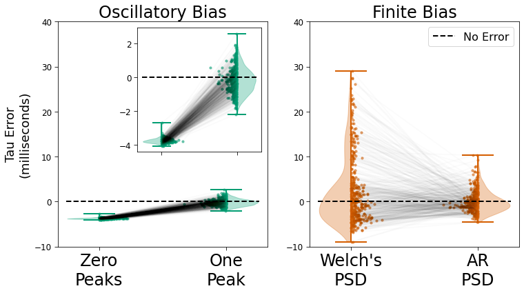

[1]:
import numpy as np
from scipy.stats import ttest_rel
from neurodsp.sim import sim_oscillation, sim_synaptic_kernel
from timescales.sim import sim_spikes_prob
from timescales.pipe import Pipe
import matplotlib.pyplot as plt
from timescales.plts import plot_connected_scatter, set_default_rc
set_default_rc()
Figure 4. Bias Solutions#
Simulation and analysis pipelines are created below to evaluate bias from finite duration and oscillations. For finite bias, autoregressive PSD recovers ground truth more accurately than Welch’s PSD. Oscillatory bias is best account for using peaks in spectral parameterization.
Oscillatory Solution#
[2]:
# Settings
n_seconds = 100
fs = 5000
tau_ms = 10
tau = tau_ms / 1000
kernel = sim_synaptic_kernel(5 * tau, fs, 0, tau)
seeds = np.arange(500)
# Create and run a pipeline for oscillatory bias
pipe_osc = Pipe(n_seconds, fs, seeds)
pipe_osc.add_step('simulate', sim_spikes_prob, kernel, mu=500, rescale=(0, .8))
pipe_osc.add_step('simulate', sim_oscillation, 20, rescale=(0, .2))
pipe_osc.add_step('sample', fs=10000)
pipe_osc.add_step('bin', 20)
pipe_osc.add_step('transform', 'PSD')
pipe_osc.add_step('fit', method='fooof', f_range=(1, 100), fooof_init={'max_n_peaks': 0})
pipe_osc.add_step('fit', method='fooof', f_range=(1, 100), fooof_init={'max_n_peaks': 1})
pipe_osc.run(progress='tqdm.notebook')
[3]:
# Recompute r-squared ignoring oscillation (from 18-22hz)
# robust regression is used instead of fooof since it's faster & more accurate,
# thus oscillations aren't explicitly modeled, lowering r^2
freqs = pipe_osc.results[0][0][0].freqs
inds = np.where((freqs <= 18) | (freqs >= 22))[0]
for i in range(len(pipe_osc.results)):
for j in [0, 1]:
pipe_osc.results[i][j][0].rsq = np.corrcoef(
pipe_osc.results[i][j][0].powers[inds], pipe_osc.results[i][j][0].powers_fit[inds]
)[0][1] ** 2
Finite Solution#
[4]:
# Settings
n_seconds = 2
fs = 5000
tau_ms = 10
tau = tau_ms / 1000
kernel = sim_synaptic_kernel(5 * tau, fs, 0, tau)
seeds = np.arange(500)
# Create and run a pipeline for finite bias
pipe_finite = Pipe(n_seconds, fs, seeds)
pipe_finite.add_step('simulate', sim_spikes_prob, kernel, mu=500, rescale=(0, 1))
pipe_finite.add_step('sample', fs=10000)
pipe_finite.add_step('bin', 20)
pipe_finite.add_step('transform', 'PSD')
pipe_finite.add_step('transform', 'PSD', ar_order=5)
# Give optimization preference to low-frequencies
sigma = np.logspace(-2, 0, 2000)
# Enforces 40ms < tau < 1ms
bounds = [[-np.inf, 1, 0, 0],
[ np.inf, 150, np.inf, np.inf]]
guess = [0, 10, 0, 1e-6]
pipe_finite.add_step(
'fit', ['tau', 'rsq'], f_range=(1, 200), method='huber',
n_resample=2000, sigma=sigma, guess=guess, bounds=bounds
)
pipe_finite.run(progress='tqdm.notebook')
[5]:
from mpl_toolkits.axes_grid1.inset_locator import inset_axes
def plot_scatter(taus_zero_peak, taus_one_peak, taus_finite_welch, taus_finite_ar,
add_stats=None, ylims=None, dash=None, dash_label=None, ylabel=None, save=False):
# Plot
fig, axes = plt.subplots(ncols=2, figsize=(12, 6))
inset = True
if inset:
axins = inset_axes(axes[0], width=2.5, height=2.5)
plot_connected_scatter(taus_zero_peak, taus_one_peak,
axins, line_color='k', line_alpha=.015, scatter_jit=.12,
colors=['C2', 'C2'], xticklabels=['', ''])
axins.axhline(dash, .04, .96, color='k', ls='--')
plot_connected_scatter(taus_zero_peak, taus_one_peak,
axes[0], line_color='k', line_alpha=.015, scatter_jit=.12,
colors=['C2', 'C2'], xticklabels=['Zero\nPeaks', 'One\nPeak'])
plot_connected_scatter(taus_finite_welch, taus_finite_ar,
axes[1], line_color='k', line_alpha=.015, scatter_jit=.12,
colors=['C3', 'C3'], xticklabels=['Welch\'s\nPSD', 'AR\nPSD'])
axes[0].axhline(dash, .04, .96, color='k', ls='--')
axes[1].axhline(dash, .04, .96, color='k', label=dash_label, ls='--')
axes[0].set_ylim(ylims[0])
axes[1].set_ylim(ylims[1])
axes[0].set_title('Oscillatory Bias')
axes[1].set_title('Finite Bias')
axes[0].set_ylabel(ylabel)
if add_stats is not None:
l = add_stats[0]
u = add_stats[1]
axes[0].plot([1, 1, 2, 2], [u+2, u+4, u+4, u+2], linewidth=1, color='k')
axes[0].text(.89, u, f'$\mu = {taus_zero_peak.mean().round(2)}$', fontsize=16)
axes[0].text(.89, l, f'$\sigma = {taus_zero_peak.std().round(2)}$', fontsize=16)
axes[0].text(1.89, u, f'$\mu = {taus_one_peak.mean().round(2)}$', fontsize=16)
axes[0].text(1.89, l, f'$\sigma = {taus_one_peak.std().round(2)}$', fontsize=16)
p = ttest_rel((taus_finite_ar - tau_ms), (taus_finite_welch - tau_ms)).pvalue
axes[0].text(1.28, u+5, 'p < 0.0001'.format(p), fontsize=16)
l = add_stats[2]
u = add_stats[3]
axes[1].plot([1, 1, 2, 2], [u+2, u+4, u+4, u+2], linewidth=1, color='k')
axes[1].text(.89, u, f'$\mu = {taus_zero_peak.mean().round(2)}$', fontsize=16)
axes[1].text(.89, l, f'$\sigma = {taus_zero_peak.std().round(2)}$', fontsize=16)
axes[1].text(1.89, u, f'$\mu = {taus_one_peak.mean().round(2)}$', fontsize=16)
axes[1].text(1.89, l, f'$\sigma = {taus_one_peak.std().round(2)}$', fontsize=16)
p = ttest_rel((taus_finite_ar - tau_ms), (taus_finite_welch - tau_ms)).pvalue
axes[1].text(1.28, u+5, 'p < 0.0001'.format(p), fontsize=16)
axes[1].legend(fontsize=16)
if save:
plt.savefig('fig04_bias_solutions.png', dpi=300, facecolor='white');
[16]:
# Get taus from models and convert to ms
taus_zero_peak = np.array([pipe_osc.results[i][0][0].tau
for i in range(len(pipe_osc.results))]) * 1000
taus_one_peak = np.array([pipe_osc.results[i][1][0].tau
for i in range(len(pipe_osc.results))]) * 1000
taus_finite_welch = pipe_finite.results[:, 0, 0] * 1000
taus_finite_ar = pipe_finite.results[:, 1, 0] * 1000
inds = np.where(taus_finite_welch < 39)[0]
taus_finite_welch = taus_finite_welch[inds]
taus_finite_ar = taus_finite_ar[inds]
tau_error_zero_peak = taus_zero_peak - tau_ms
tau_error_one_peak = taus_one_peak - tau_ms
tau_error_finite_welch = taus_finite_welch - tau_ms
tau_error_finite_ar = taus_finite_ar - tau_ms
# R-squared
rsq_zero_peak = pipe_finite.results[:, 0, 1]
rsq_one_peak = pipe_finite.results[:, 1, 1]
rsq_finite_welch = np.array([pipe_osc.results[i][0][0].rsq
for i in range(len(pipe_osc.results))])
rsq_finite_ar = np.array([pipe_osc.results[i][1][0].rsq
for i in range(len(pipe_osc.results))])
rsq_finite_welch = rsq_finite_welch[inds]
rsq_finite_ar = rsq_finite_ar[inds]
[7]:
#plot_scatter(taus_zero_peak, taus_one_peak, taus_finite_welch, taus_finite_ar,
# dash=tau_ms, dash_label='Ground Truth', ylims=[[0, 50], [0, 50]])
plot_scatter(tau_error_zero_peak, tau_error_one_peak, tau_error_finite_welch, tau_error_finite_ar,
ylims=[(-10, 40), (-10, 40)], dash=0, dash_label='No Error', ylabel='Tau Error\n(milliseconds)',
save=True)

[17]:
print('Taus')
print('----')
print('Finite Bias')
print(f'Welch: m={taus_finite_welch.mean().round(3)}, sd={taus_finite_welch.std().round(3)}')
print(f'AR : m={taus_finite_ar.mean().round(3)}, sd={taus_finite_ar.std().round(3)}')
print()
print('Oscillatory Bias')
print(f'0 Peak: m={taus_zero_peak.mean().round(3)}, sd={taus_zero_peak.std().round(3)}')
print(f'1 Peak: m={taus_one_peak.mean().round(3)}, sd={taus_one_peak.std().round(3)}')
print()
Taus
----
Finite Bias
Welch: m=12.242, sd=7.408
AR : m=10.021, sd=2.403
Oscillatory Bias
0 Peak: m=6.236, sd=0.128
1 Peak: m=9.803, sd=0.749
[18]:
print('Error')
print('-----')
print('Finite Bias')
print(f'Welch: m={tau_error_finite_welch.mean().round(3)}, sd={tau_error_finite_welch.std().round(3)}')
print(f'AR : m={tau_error_finite_ar.mean().round(3)}, sd={tau_error_finite_ar.std().round(3)}')
print()
print('Oscillatory Bias')
print(f'0 Peak: m={tau_error_zero_peak.mean().round(3)}, sd={tau_error_zero_peak.std().round(3)}')
print(f'1 Peak: m={tau_error_one_peak.mean().round(3)}, sd={tau_error_one_peak.std().round(3)}')
print()
print(f'Finite : {ttest_rel(tau_error_finite_welch, tau_error_finite_ar)}')
print(f'Oscillatory: {ttest_rel(tau_error_zero_peak, tau_error_one_peak)}')
print()
print('R-Squared')
print('---------')
print('Finite Bias')
print(f'Welch: m={rsq_finite_welch.mean().round(3)}, sd={rsq_finite_welch.std().round(3)}')
print(f'AR : m={rsq_finite_ar.mean().round(3)}, sd={rsq_finite_ar.std().round(3)}')
print()
print('Oscillatory Bias')
print(f'0 Peak: m={rsq_zero_peak.mean().round(3)}, sd={rsq_zero_peak.std().round(3)}')
print(f'1 Peak: m={rsq_one_peak.mean().round(3)}, sd={rsq_one_peak.std().round(3)}')
print()
print(f'Finite : {ttest_rel(rsq_finite_welch, rsq_finite_ar)}')
print(f'Oscillatory: {ttest_rel(rsq_zero_peak, rsq_one_peak)}')
Error
-----
Finite Bias
Welch: m=2.242, sd=7.408
AR : m=0.021, sd=2.403
Oscillatory Bias
0 Peak: m=-3.764, sd=0.128
1 Peak: m=-0.197, sd=0.749
Finite : Ttest_relResult(statistic=6.12059086869839, pvalue=2.203232716394182e-09)
Oscillatory: Ttest_relResult(statistic=-114.54422825961758, pvalue=0.0)
R-Squared
---------
Finite Bias
Welch: m=0.902, sd=0.02
AR : m=0.977, sd=0.007
Oscillatory Bias
0 Peak: m=0.649, sd=0.134
1 Peak: m=0.989, sd=0.015
Finite : Ttest_relResult(statistic=-84.34055789818582, pvalue=5.069595266675468e-259)
Oscillatory: Ttest_relResult(statistic=-56.01111706016069, pvalue=2.386207646093471e-217)